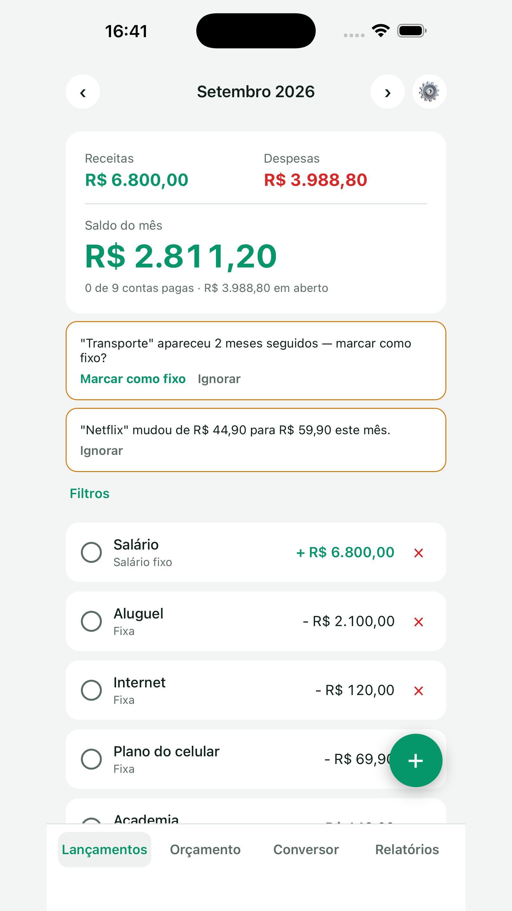
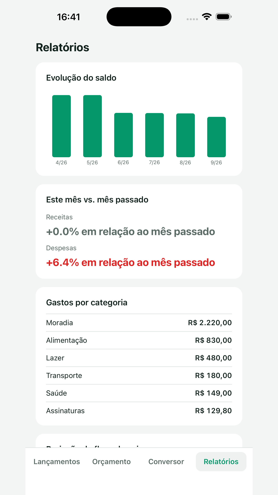

Escrever o aplicativo é metade do trabalho. A outra metade é assinatura, ícone, política de privacidade, declaração de dados e o processo de teste que as lojas exigem — e é aí que a maioria dos projetos trava.
O que entrego
Preço fechado e escopo escrito antes de começar. Sem cobrança por hora e sem projeto que não acaba.
Uma base de código para as duas plataformas, com aparência nativa em cada uma.
Levo até estar na Google Play e na App Store, incluindo o processo de teste que as lojas exigem hoje.
Português, inglês e espanhol, com tema claro e escuro e acessibilidade para leitor de tela.
Política de privacidade, declaração de coleta de dados e monitoramento de erro que não envia dado do usuário.
Testes automatizados no que importa, e uma varredura manual documentada antes de qualquer publicação.
Entrego o repositório com a documentação das decisões. Sem amarra e sem dependência de mim.
Trabalho
Aplicativo próprio · Android e iOS · em teste fechado na Google Play
Controle de gastos e contas do mês, com orçamento, metas, conversor de moedas e relatórios. Nenhum lançamento sai do aparelho — não há conta, login nem servidor.


Como funciona
Uma coisa que quase ninguém conta antes: as lojas quebram aplicativo parado. Android e iOS elevam exigências todo ano, e aplicativo que não acompanha sai do ar. Isso entra na conversa desde o começo, não como surpresa dois anos depois.
Quem sou
Trabalho com qualidade de software e automação de testes, e desenvolvo aplicativos móveis. Moro em Dublin, na Irlanda, e atendo em português, inglês e espanhol.
Minha formação é em testar software — o que muda o que eu construo. Escrevo a tela pensando no que vai quebrar nela, não só em como ela aparece.
Writing the app is half the work. The other half is signing, icons, privacy policy, data safety declarations and the testing process the stores now require — and that is where most projects stall.
What you get
Fixed price and written scope before anything starts. No hourly billing, and no project that never ends.
One codebase for both platforms, looking native on each.
I take it all the way to Google Play and the App Store, including the testing process the stores require today.
Portuguese, English and Spanish, with light and dark themes and screen-reader accessibility.
Privacy policy, data safety declaration, and error monitoring that sends none of your users' data.
Automated tests where they matter, plus a documented manual sweep before any release.
You get the repository and the written record of every decision. No lock-in, no dependency on me.
Work
Own product · Android and iOS · in closed testing on Google Play
Monthly expense and bill tracking, with budgeting, goals, a currency converter and reports. Nothing the user enters ever leaves their phone — there is no account, no login and no server.
How it works
Something almost nobody mentions upfront: the stores break apps that sit still. Android and iOS raise their minimum requirements every year, and an app that does not keep up gets removed. That is part of the conversation from the start, not a surprise two years later.
About
I work in software quality and test automation, and I build mobile apps. I am based in Dublin, Ireland, and work in Portuguese, English and Spanish.
My background is in testing software — which changes what I build. I write a screen thinking about what will break in it, not only how it looks.
Escribir la aplicación es la mitad del trabajo. La otra mitad es la firma, el icono, la política de privacidad, la declaración de datos y el proceso de pruebas que exigen las tiendas — y ahí es donde se atascan la mayoría de los proyectos.
Lo que entrego
Precio cerrado y alcance escrito antes de empezar. Sin cobro por hora y sin proyecto que no termina.
Un solo código para las dos plataformas, con apariencia nativa en cada una.
La llevo hasta Google Play y la App Store, incluido el proceso de pruebas que hoy exigen las tiendas.
Portugués, inglés y español, con tema claro y oscuro y accesibilidad para lector de pantalla.
Política de privacidad, declaración de recogida de datos y monitorización de errores que no envía ningún dato de tus usuarios.
Pruebas automatizadas donde importan, y un barrido manual documentado antes de cualquier publicación.
Entrego el repositorio con la documentación de cada decisión. Sin ataduras y sin dependencia de mí.
Trabajo
Producto propio · Android e iOS · en pruebas cerradas en Google Play
Control de gastos y cuentas del mes, con presupuesto, objetivos, conversor de divisas e informes. Nada de lo que el usuario registra sale de su móvil: no hay cuenta, ni inicio de sesión, ni servidor.
Cómo funciona
Algo que casi nadie cuenta de antemano: las tiendas rompen las aplicaciones que se quedan quietas. Android e iOS suben sus requisitos mínimos cada año, y la aplicación que no los sigue acaba retirada. Eso entra en la conversación desde el principio, no como sorpresa dos años después.
Quién soy
Trabajo en calidad de software y automatización de pruebas, y desarrollo aplicaciones móviles. Vivo en Dublín, Irlanda, y atiendo en portugués, inglés y español.
Mi formación es probar software — y eso cambia lo que construyo. Escribo una pantalla pensando en qué se va a romper en ella, no solo en cómo se ve.